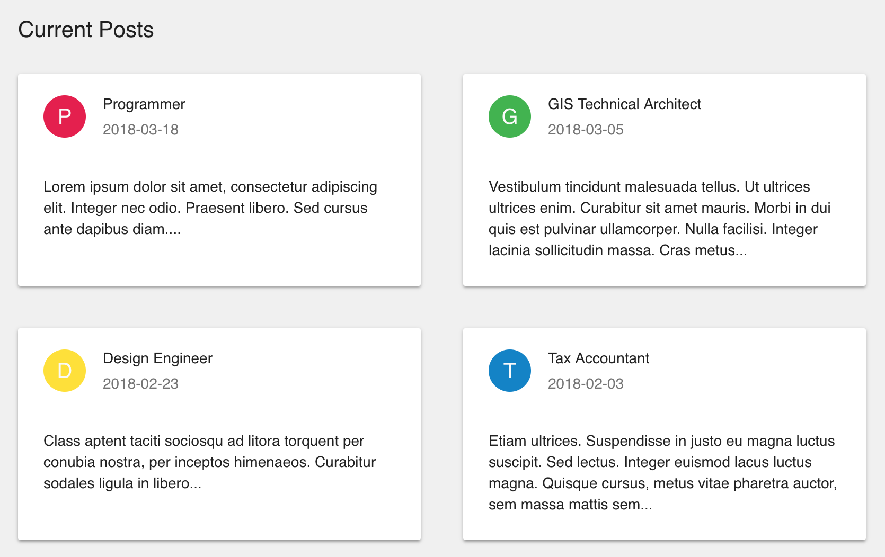

Rendering a Custom ListView¶
You can render a list of model data in any way you wish using the component
property of the <ListView />
component. The screenshot below shows the posts from the previous example,
rendered as a grid of cards instead of a table.

To create a custom ListView component, you just need to implement a React component that accepts IListViewComponentProps, as shown in the example below
JSX for a Custom ListView Component¶
First, create a React component that accepts IListViewComponentProps and renders the data as needed. We recommend creating a Stateless Functional Component for this, since RevJS handles the loading and data state for you:
const MyCustomListView = (props: IListViewComponentProps<models.Post>) => {
if (props.loadState == 'LOADING') {
// Loading state
return (
<Typography variant="subheading">
Loading...
</Typography>
);
}
else {
// Render the posts as a list of cards
const postCards = props.records.map((post) => (
<Card>
<CardHeader
avatar={
<Avatar style={{ backgroundColor: getColour() }}>
{post.title.substr(0, 1)}
</Avatar>
}
title={post.title}
subheader={post.post_date}
/>
<CardContent>
<Typography component="p">
{post.body}
</Typography>
</CardContent>
</Card>
));
return (
<div>
<Typography variant="title">
{props.title}
</Typography>
<Grid container spacing={40}>
{postCards}
</Grid>
</div>
);
}
};
To render your custom list component, simply pass it into RevJS's ListView
component along with the query you want to populate it with. There is obviously
no need to pass in the fields prop in this case - all the fields of the
Post model will be available for you to render.
<ModelProvider modelManager={modelManager} >
<ListView
title="Current Posts"
model="Post"
where={{
post_date: { _gt: '2017-01-01' }
}}
orderBy={['post_date desc']}
component={MyCustomListView}
/>
</ModelProvider>
(Complete working example here).